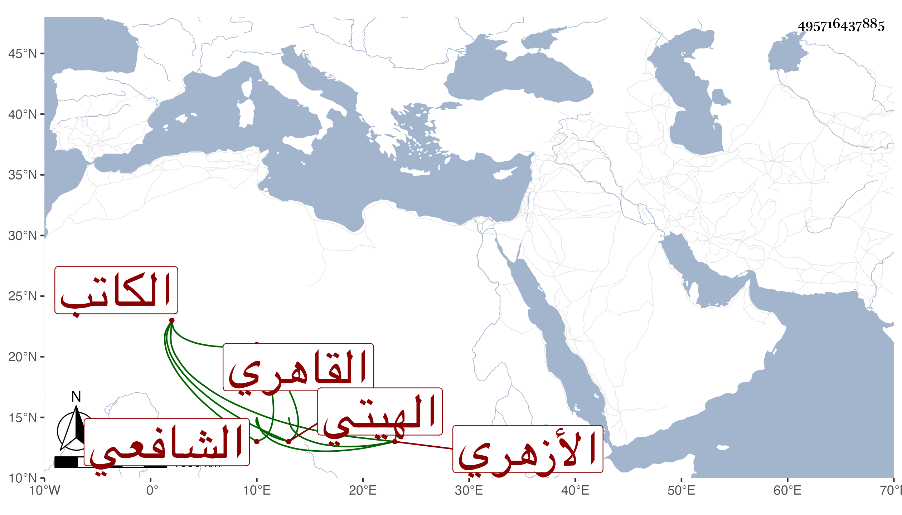

0902Sakhawi.DawLamic.ITO20230111-ara1.EIS1600.495716437885
Biography ID: 495716437885
124
عبد الله بن علي بن عبد الله بن محمد جمال الدين الهيتي ثم القاهري الأزهري الشافعي الكاتب . نشأ فحفظ القرآن والتنبيه وأخذ في الفقه عن الشرف السبكي ثم لازم العبادي واعتنى بالكتابة فأخذها عن الزين بن الصائغ والبرهان الفرنوي وغيرهما وتميز فيها وكان مرجعا في رسمها منفردا بطرائقها وإن كان فيهم من هو أحسن كتابة منه وصنف في رسومها شيئا ، وكان شيخا صالحا نصوحا في إرشاده خيرا محتسبا بتعليمه مؤذنا في جهات . مات في رجب سنة إحدى وتسعين عن نحو خمس وسبعين ودفن في الصحراء بالقرب من تربة الأنصاري .
